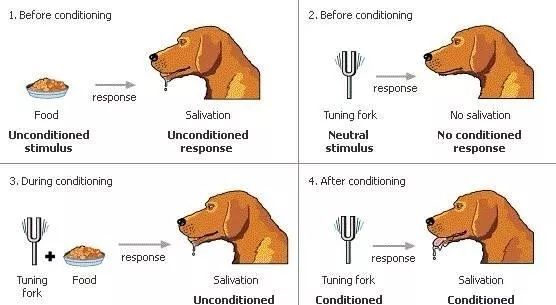

行为主义学习理论的主要代表人物是桑代克、华生、巴甫洛夫和斯金纳等。 该学习理论的核心观点为学习过程是有机体在一定条件下形成刺激与反应的联结 从而获得新的经验的过程。由于行为主义强调刺激——反应的联结， 故而属于联结派学习理论。
桑代克是联结主义学习理论的创始人，其联结主义理论是教育心理学史上 第一个较为完整的学习理论。其主要观点如下。
桑代克通过饿猫开迷箱的实验提出学习是建立刺激－反应联结的过程， 即在一定的刺激情境与某种正确反应之间形成联结， 其中不需要观念或思维的参与。 这种刺激－反应联结主要是通过尝试错误而形成的， 是随着错误反应的逐渐减少和正确反应的逐渐增加而形成的。 学习就是通过渐进的尝试错误形成刺激－反应联结的过程， 因此桑代克的联结说又称为“试误说”。
桑代克提出了学习的主律和副律。 其中，学习的主律有三条：准备律、练习律、效果律。
①准备率，指在试误学习的过程中， 当刺激与反应之间的联结事前处于某种准备状态时， 实现则感到满意，不实现则会感到烦恼；反之， 当此联结不准备实现时，实现则感到烦恼，不实现则会感到满意。
②练习律，指在试误学习的过程中，任何刺激与反应的联结， 如果经常对之进行练习和运用，则其联结的力量就会逐渐增大； 练习的时间越近，联结保持的力量也越大（应用律）。 而如果不运用，则联结的力量会逐渐减少； 不用的时间越长，则联结的力量减小越甚（失用律）。
③效果律，指在试误学习的过程中，如果其他条件相同， 在学习者对刺激情境做出特定的反应之后， 如果得到满意的结果则其联结就会增强（满意律）， 如果得到烦恼的结果则其联结就会削弱（烦恼律）。
巴甫洛夫在研究狗的消化腺中唾液的分泌时发现， 唾液分泌的多少与外在刺激的性质和出现的时间有密切关系。 实验开始时，首先向狗呈现铃声刺激，铃响半分钟后便给予食物， 于是可观察并记录到狗的唾液分泌反应。 当铃声与食物反复配对呈现多次以后， 仅呈现铃声而不出现食物时，狗也会做出唾液分泌反应。
在这个实验开始时，食物可以诱发狗的唾液分泌反应， 而铃声不能，这时食物叫作无条件刺激，铃声叫作中性刺激， 由食物诱发的唾液分泌反应称为无条件反应。在实验过程中， 当铃声与食物经过多次配对之后，单独呈现铃声而没有食物时， 狗也会分泌唾液。此时，中性刺激铃声具有了诱发原来仅受食物制约 的唾液分泌反应的某些力量而变成了条件刺激， 单独呈现条件刺激即能引起的唾液分泌反应则叫作条件反应。 这就是经典性条件反射的形成过程。

条件反射的获得是指条件刺激（如铃声）反复与无条件刺激 （如食物）相匹配，使条件刺激获得信号意义的过程， 即条件反射建立的过程。
条件反射的消退是指在条件反射形成后， 如果条件刺激重复出现多次而没有无条件刺激相伴随， 则条件反应会变得越来越弱，并最终消失。
刺激泛化指的是人和动物一旦学会对某一特定的条件刺激做出 条件反应以后，其他与该条件刺激相类似的刺激也能诱发条件反应。 例如，曾经被一条大狗咬过的人， 看见非常小的狗也可能产生恐惧心理。
刺激分化指的是通过选择性强化和消退使有机体学会对 条件刺激和与条件刺激相类似的刺激做出不同的反应。 例如，为了使狗能够区分开圆形和椭圆形光圈， 只在圆形光圈出现时才给予食物强化，而在呈现椭圆形光圈时不给予 强化，那么狗便可以学会只对圆形光圈做出反应而不理会椭圆形光圈。
凡是能够引起条件反应的物理性的条件刺激叫作第一信号系统 的刺激，凡是能够引起条件反应的以语言符号为中介 的条件刺激叫作第二信号系统的刺激。
斯金纳是著名的行为主义心理学家，操作性条件反射理论的创始人。 其理论是基于他自己发明的“斯金纳箱”做的实验提出的。 他认为，学习的实质是反应概率的变化， 而强化是增强反应概率的手段。如果一个操作出现以后， 有强化刺激尾随，则该操作的概率就增加； 已经通过条件作用强化了的操作，如果以后不再有强化刺激尾随， 则该操作的概率就减弱，甚至消失。 这就是操作性条件反射的基本过程。
斯金纳认为人和动物的行为有两类： 应答性行为和操作性行为。应答性行为是由特定刺激引起的， 是不随意的反射性反应，是经典性条件作用的研究对象； 而操作性行为则不与任何特定刺激相联系， 是有机体自发做出的随意反应，是操作性条件作用的研究对象。 在日常生活中，人的行为大部分都是操作性行为， 操作性行为主要受强化规律的制约。
强化也是一种操作，强化的作用在于改变同类反应在将来发生的概率， 而强化物则是指能够提高反应概率的刺激物， 它们的呈现或撤除能够增加反应发生的概率。 强化有正强化（实施奖励）与负强化（撤销惩罚）之分。
①正强化与负强化。正强化是指个体在做出某种反应之后， 给他一个愉快刺激（实施奖励），从而增加其类似行为出现的概率。 负强化是指个体在做出某种反应之后，令其摆脱厌恶刺激（撤销惩罚）， 从而增加其类似行为出现的概率。
②普雷马克原则。在选择强化物时，可以遵循普雷马克原则， 又称祖母的法则，即用高频的活动作为低频活动的有效强化物， 通俗讲就是：首先做我要你做的事情， 然后才可以做你想做的事情。如学生必须写完作业才能看动画片。
逃避条件作用与回避条件作用都是负强化的条件作用类型。
①逃避条件作用。当厌恶刺激或不愉快情境出现时， 有机体做出某种反应，从而逃避了厌恶刺激或不愉快情境， 则该反应在以后的类似情境中发生的概率便增加。 如看见路上的垃圾后绕道走开， 感觉屋内人声嘈杂时暂时离屋等。
②回避条件作用。当预示厌恶刺激或不愉快情境即将出现的 刺激信号呈现时，有机体自发地做出某种反应，从而避免了 厌恶刺激或不愉快情境的出现，则该反应在以后的类似情境中 发生的概率也会增加。如违章骑车遇到警察时赶快下车。
当有机体做出某种反应以后，呈现一个厌恶刺激， 以消除或抑制此类反应的过程，称作惩罚。惩罚也有正负之分。 正惩罚也称呈现性惩罚，是通过呈现厌恶刺激来降低反应频率， 如言语斥责、批评、罚款等；负惩罚也称移去性惩罚， 是通过消除愉快刺激来降低反应频率， 例如，减少儿童的零花钱，取消儿童周末看电影的权利等
有机体做出以前曾被强化过的反应，如果在这一反应之后不再 有强化物相伴，那么，此类反应在将来发生的概率便降低， 称为消退。消退是减少不良行为、消除坏习惯的有效方法。 如学生屡次举手但总不被老师提问发言， 久而久之，他将不愿意再举手发言。